Contáctame
¡Hablemos!
Estoy abierto a nuevas oportunidades y colaboraciones. Si tienes un proyecto en mente o simplemente quieres saludar, no dudes en contactarme. ¡Espero con ansias conectar contigo!
x

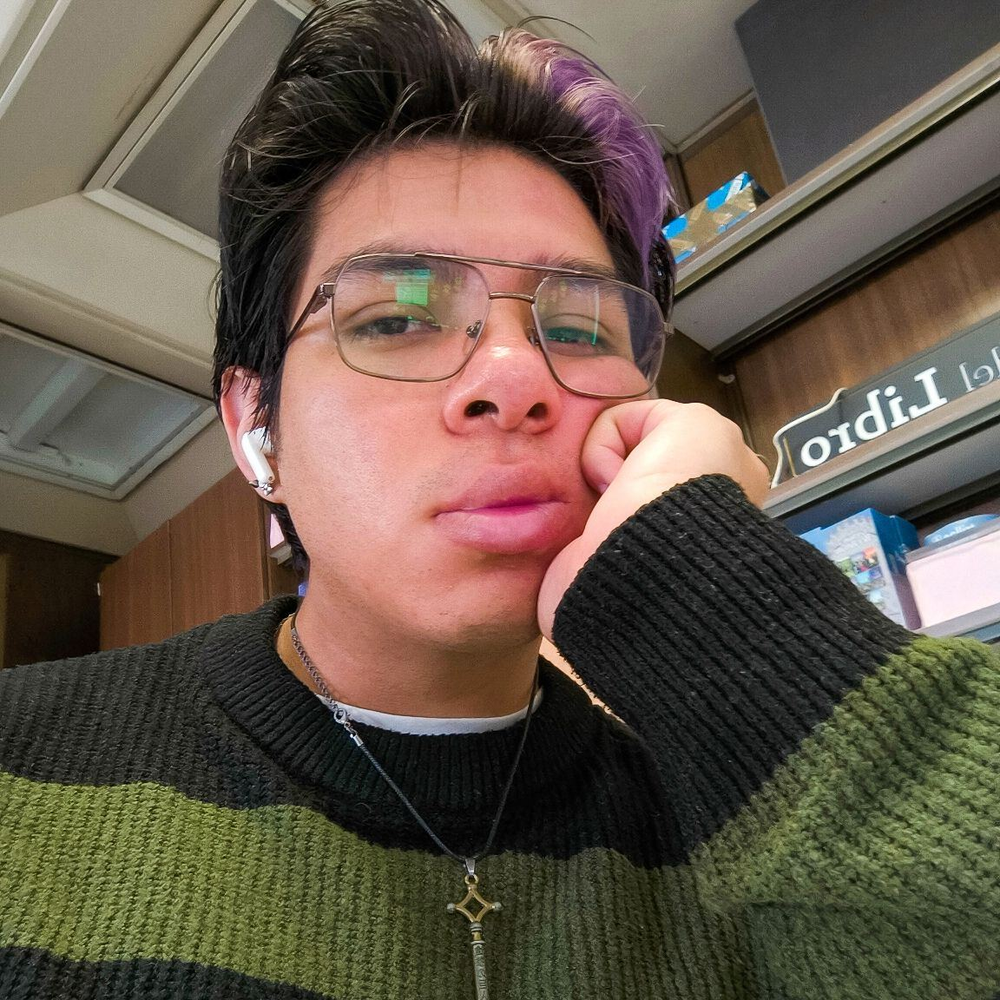
Soy diseñador gráfico con un año de experiencia en Editorial Trillas, donde desarrollé portadas y materiales visuales con Illustrator, InDesign y Photoshop. Me apasiona explorar nuevas formas de crear, por eso incorporo herramientas de Inteligencia Artificial como ChatGPT, Leonardo AI y Midjourney en mi proceso creativo. Actualmente busco combinar mis conocimientos de diseño con el desarrollo Front-End, creando experiencias digitales que unan estética, funcionalidad y tecnología.
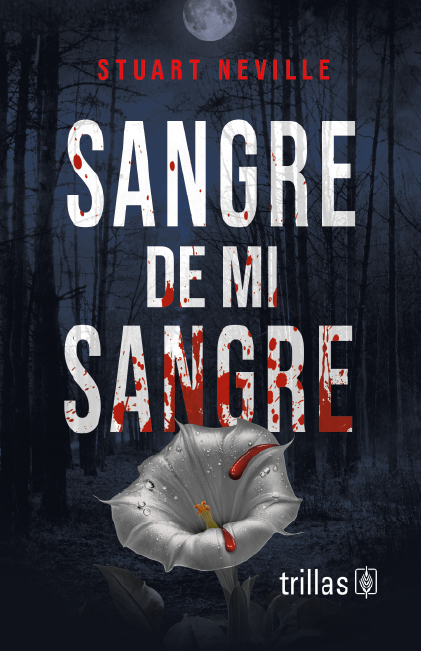
Portada final elegida para una novela negra escrita por Stuart Neville, utilizando photoshop para hacer el montaje y su posterior retoque de color.
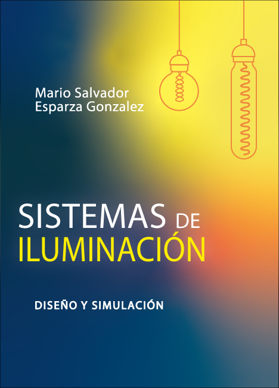
Portada final elegida para un libro técnico, acerca de como utilizar la iluminación natural y artificial en interiores y exteriores de manera óptima, se utilizo Illustrator para el fondo y los focos y Photoshop para desaturar el color.
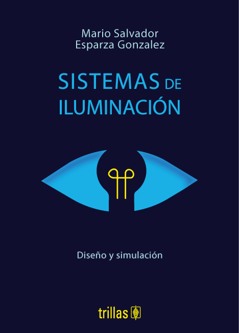
Boceto realizado con una técnica de conceptualización y combinación de elementos, se boceto la idea a mano y se traspaso a digital vectorizando la idea en Illustrator.
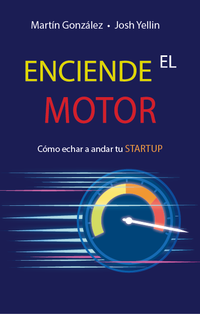
Boceto generado para un libro de divulgación, dirigido a lideres de Startups que buscan tener un mejor rendimiento en sus equipos de trabajo, se utilizo Illustrator para vectorizar todo.
Boceto alternativo generado con Photoshop realizando el montaje y ajustes de color para el mismo libro.
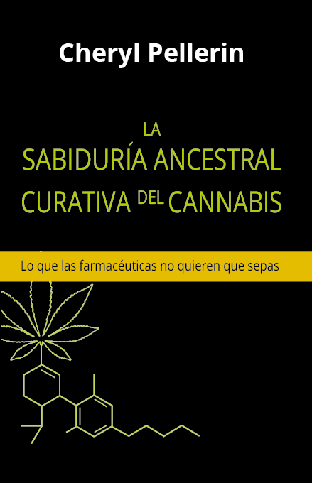
Boceto diseñado para un libro de divulgación sobre el uso medicinal del cannabis escrito por Cheryl Pellerin, generado en Illustrator.
Boceto alternativo diseñado para el mismo libro, conceptualizado y realizado en Illustrator.
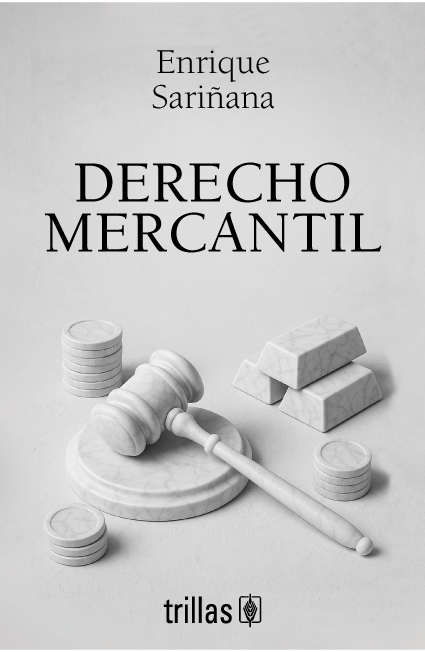
Propuesta final diseñada para un libro técnico sobre el derecho mercantil, se utilizo ChatGPT para generar ideas y conceptos visuales, posteriormente se realizo el montaje y mejora de color en Photoshop.
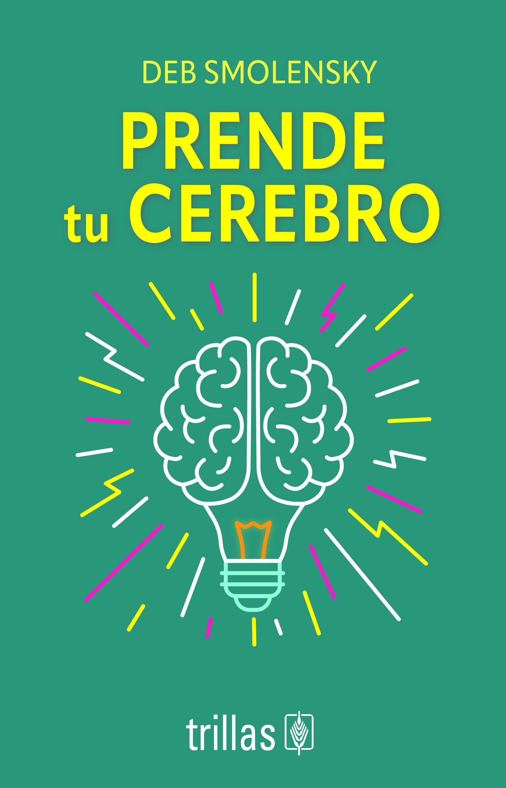
Boceto generado para un libro de divulgación de superación personal y bienestar mental, se genero ideas y conceptos visuales con ChatGPT y se vectorizo en Illustrator.
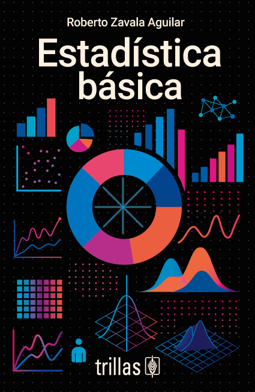
Boceto diseñado para un libro técnico sobre estadística básica, se utilizo ChatGPT para generar ideas en tomando como inspiración "stadistics inphographics" y se realizaron los vectores y la composición en Illustrator.
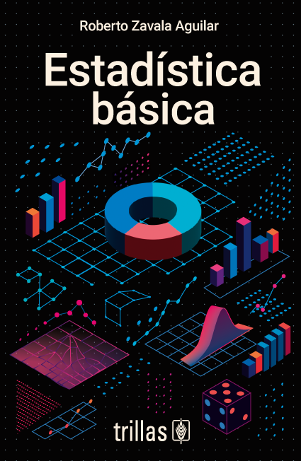
Boceto alternativo para el mismo libro técnico, se utilizo la misma técnica de generación de ideas con ChatGPT con un enfoque isometrico, realizando la composición y vectorización en Illustrator.
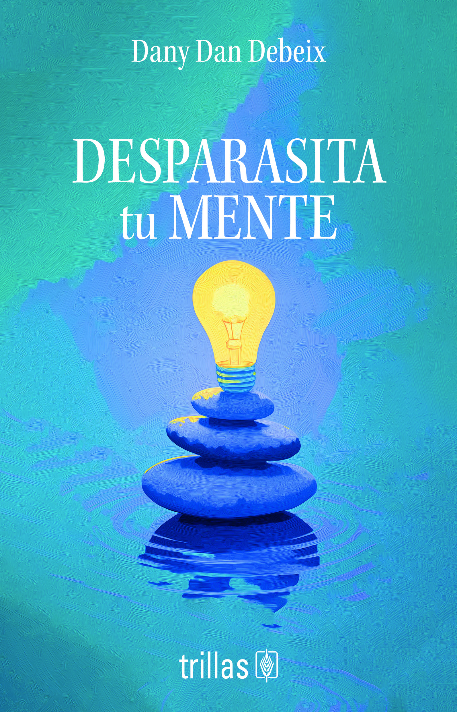
Boceto realizado para un libro de divulgación sobre bienestar mental y emocional, generando ideas y conceptos visuales con ChatGPT, para posteriormente generar un prompt usado en Midjourney para crear la imagen principal, se finalizo el diseño en Photoshop y la composición en Illustrator.
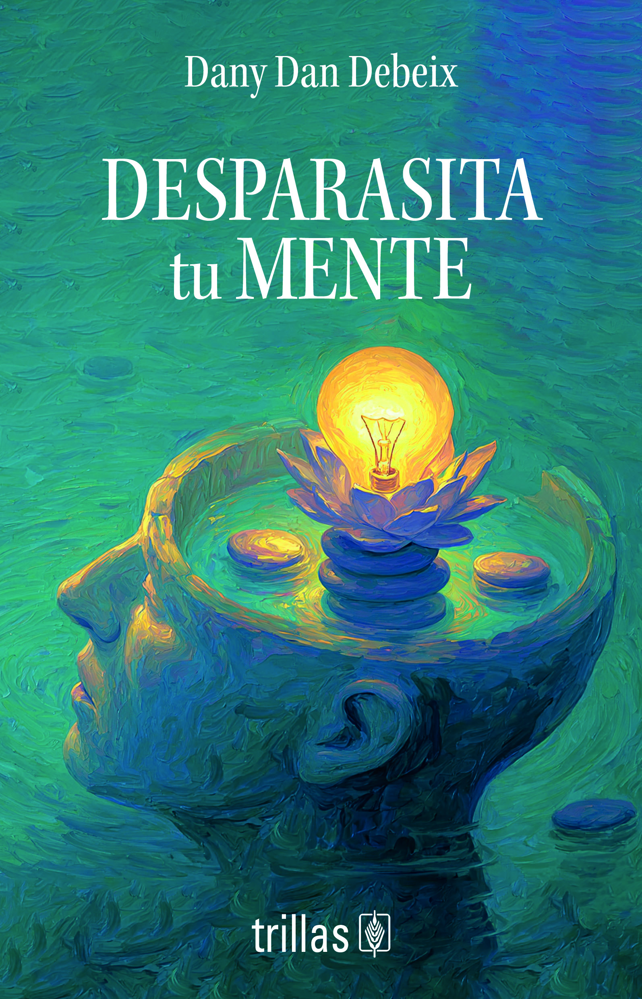
Boceto alternativo, generando ideas y conceptos visuales con ChatGPT, para posteriormente generar un prompt usado en Midjourney para crear la imagen principal, se finalizo el diseño en Photoshop y la composición en Illustrator.
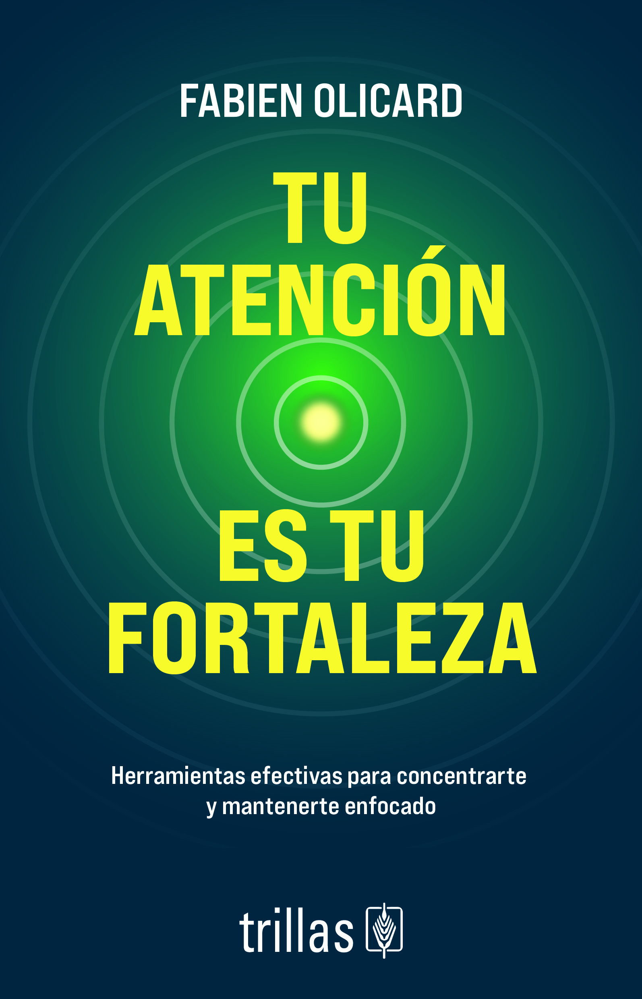
Boceto generado para un libro de divulgación sobre la concentración y el enfoque mental, generando ideas y conceptos visuales con ChatGPT, para posteriormente vectorizar y realizar la composición en Illustrator.
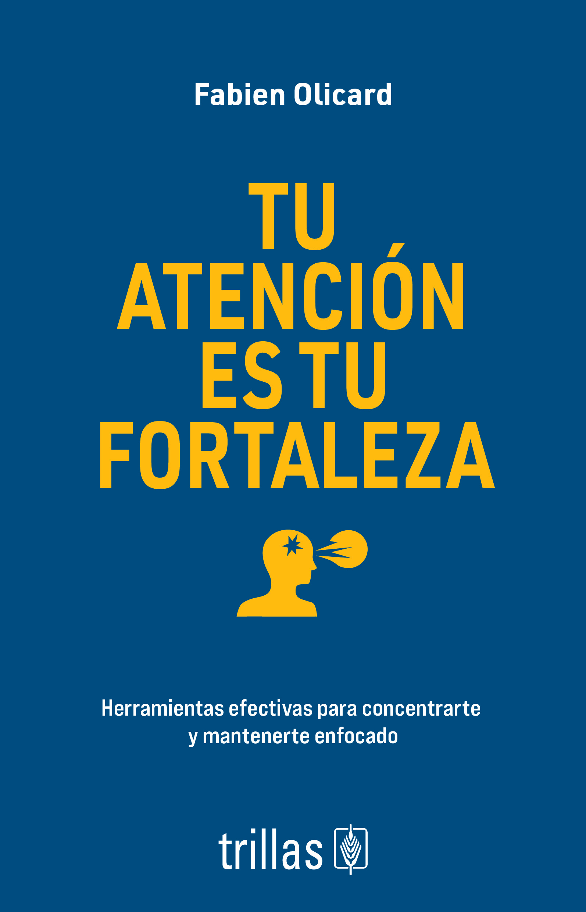
Boceto alternativo, generando ideas y conceptos visuales con ChatGPT, para posteriormente vectorizar y realizar la composición en Illustrator.
Estoy abierto a nuevas oportunidades y colaboraciones. Si tienes un proyecto en mente o simplemente quieres saludar, no dudes en contactarme. ¡Espero con ansias conectar contigo!